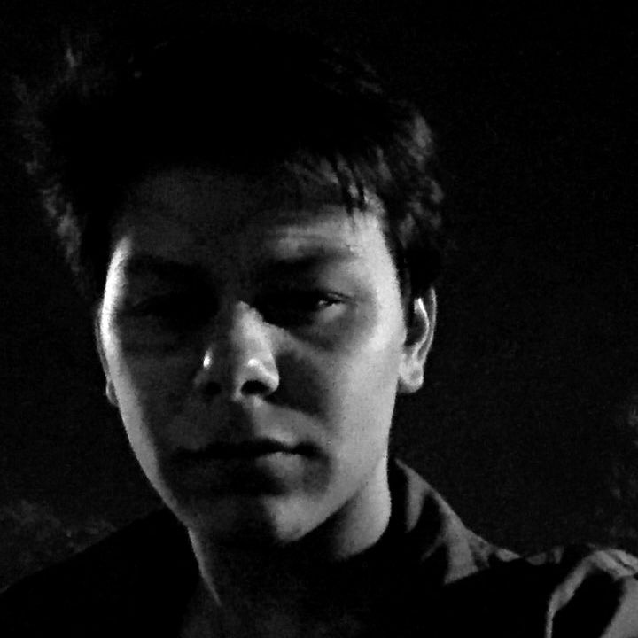

Ali Sacid Karadogan
Native & Cross-Platform Mobile Developer
About Me
I am a highly motivated developer with
more than 3 years of professional experience. I have great passion for learning
new technologies and extending this experience. Currently I am more focused on
native iOS application development and serverless architecture.
Specializing on: Swift, Flutter & Firebase.
Expreience
- BosphorusISS - Istanbul, Turkey
- Software Engineer, Aug 2020 - Present
- UI/UX design & cross-platform mobile development with Flutter
- BLoC/Cubit, MVVM, Firebase authentication
- Object oriented programming
- Working in an agile environment
- Part-Time Software Engineer, Oct 2019 - Aug 2020
- Software Engineering Intern, Aug 2019 - Sep 2019
- Aselsan A.Ş., - Ankara, Turkey
- Production Directorate - Electronic Engineering Intern, Jul 2019
- System production
- Electronic production
- Lean production
- Denge Bilgisayar - Istanbul, Turkey
- Mobile Application Developer, Jul 2018 - Aug 2018
- UI/UX design and development of a stock management application with Angular 5 & Ionic Framework
- Computer Society, Gebze Technical University
- Mobile Application Developer, Jul 2019 - Nov 2019
- UI/UX design and cross-platform development for computer society's mobile application with Flutter.
- BLoC Pattern, Firebase authentication, DJango, NodeJS, PostgreSQL
See project on
GitHub
- Hazine Autonomous Vehicle, Gebze Technical University
- Embedded Software Developer, Jun 2019 - Nov 2019
Languages
- English - Bilingual proficiency
- Türkçe - Native proficiency
Education
- 2022 - Present, Computer Sciences at Istanbul Technical University (MSc)
- 2016 - 2020, Electronic Engineering at Gebze Technical University (BSc)
- 2015 - 2016, Computer Engineering at Gazi University (BSc)
Projects
-
Guitar Tuner for STM32, May 2020 - June 2020
- Remote Keyless System through C, April 2020 - May 2020
- Remote keyless system design to work on
STM32 with random rolling code generation and AES encryption implementation.
See project on
GitHub
- Pong Game for FPGA, November 2019 - January 2020
- Development of the iconic Pong game design and mechanics from ground zero to make it work on an
FPGA
See project on
GitHub
- DSP Education & Laboratory Kit (Graduation Project), Oct 2018 - January 2020
- Development of a laboratory kit through Python and C using various sensors on Raspberry Pi with
embedded Linux. Software and hardware testing of the laboratory kit for various scenarios using
preliminary studies of digital signal processing course laboratory experiments.